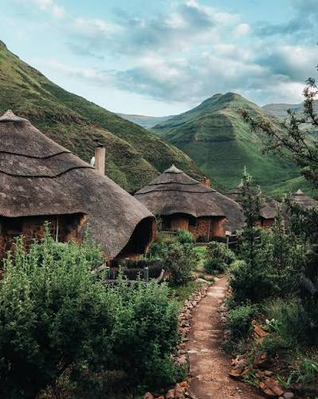

About the Mountain Kingdom
Discover the high-altitude landscapes, inspiring royal history, and deeply-rooted traditions of Lesotho.

The Kingdom in the Sky
Lesotho is an independent constitutional monarchy completely surrounded by South Africa. It is the only independent state in the world that lies entirely above 1,000 metres in altitude, earning its rightful reputation as the Kingdom in the Sky.
From the snowy peaks of the Maloti Mountains to the dramatic plateaus carved by the Orange (Senqu) River, Lesotho offers an unspoilt natural playground and a culture of warmth, resilience, and song.
Essential Kingdom Facts
- Capital City: Maseru
- Official Languages: Sesotho & English
- Currency: Lesotho Loti (LSL) — Pegged 1:1 with South African Rand (ZAR)
- Highest Peak: Thabana Ntlenyana (3,482 m — Highest in Southern Africa)
- National Symbols: Mokorotlo hat & traditional Basotho blanket
- Population: Approximately 2.3 Million people
- Independence: 4 October 1966
A Kingdom Forged Through Time
Lesotho's history is an inspiring saga of diplomacy, unity, and courage led by King Moshoeshoe the Great.
Unification by King Moshoeshoe I
During the turbulent era of the Difaqane (forced migrations), King Moshoeshoe I brought together scattered clans, providing sanctuary atop the mountain fortress of Thaba-Bosiu and giving birth to the Basotho nation.
British Protectorate of Basutoland
Through astute diplomatic appeals to Queen Victoria, King Moshoeshoe I secured British protectorate status, preserving Basotho territorial integrity and preventing absorption into colonial South Africa.
National Independence
Lesotho attained full independence on 4 October 1966, re-establishing its historic constitutional monarchy with a proud cultural identity.
Highlands Water Project & Modern Ecotourism
The construction of Katse and Mohale dams created Africa's largest engineering water-transfer scheme, opening remote mountain passes for global adventure travelers and alpine sports enthusiasts.
Living Culture of the Mountain Kingdom
Proud customs and artistic traditions that continue to colour everyday life in Lesotho's highlands.
The Basotho Blanket
Worn with pride across all generations, traditional wool blankets (such as Seanamarena and Poone) carry deep cultural meaning, denoting status, celebrations, and mountain warmth.
The Mokorotlo Hat
The conical grass hat inspired by the silhouette of Mount Qiloane is the national symbol of Lesotho, featured proudly on the national flag and vehicle registration plates.
The Basotho Pony
Bred for sure-footed mountain agility, these legendary ponies remain the backbone of highland travel, carrying shepherds across craggy passes where no motor vehicle can reach.
Famo Accordion Music
A spirited and rhythmic folk music genre powered by piano accordions, oil-drum percussion, and passionate vocal poetry detailing the lives, loves, and journeys of highland miners and herders.
Ancient San Rock Art
The sandstone overhangs of Sehlabathebe and Liphofung house pristine rock paintings created thousands of years ago by hunter-gatherer San shamans depicting sacred elands and spirit worlds.
Living Rondavels
Traditional stone-and-thatch circular huts designed to withstand extreme mountain winters, adorned with intricate geometric mud relief murals called litema.
Travel Essentials & FAQs
Everything you need to know before stepping into the Mountain Kingdom.